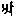

釋教最上乘秘密藏陁羅尼集卷第二十九 一 密
蘘麌梨童女陁羅尼
怛你也(二合)他(去、引)(一) i 壹理mi 蜜tti 帝(二) 底(丁以反)理蜜帝(三) 壹理底理蜜帝(四) du 嫰(上)mme 迷嫰(上)麼(引)理(引)曵(引)(五) du 訥cche 砌訥蹉(去、引)理曵(六) 得羯囉抳(尼貞反)(七) 嚩(無博反)迦囉抳(八) 羯濕弭(二合、引)[口*(肄-聿+(企-止+米))](引)(九) 羯濕弭(二合、引)囉穆訖帝(二合)(十) 惡ghe 岐(歧曵反)惡伽(去)寧(十一) 惡伽(去)曩伽(去)寧(十二) 壹理曵(十三) 壹理壹理曵(十四) 阿(上)佉(去、引)yye 以曵(二合)(十五) a 郃pa 播(引)以曵(二合)(十六) 濕吠(二合)帝(引)(十七) 濕吠(二合)多頓ṇḍe 妳(十八) 阿(上)曩nu 努(鼻音)囉乞曬(二合)(十九) 娑嚩(二合、引)賀(引)(二十)
蘘麌梨童女第二陁羅尼
怛你也(二合)他(引)(一) 壹攞(引)(二) 尾攞(引)(三) 斫ko 句(去、引)嚩入句(去、引)(四) ko 句(引)ṇa 拏句(引)ṇe 妳(引)底(五) po 報(引)拏(引)報ṇe 妳(引)底(六) [寧*頁]矩嚕ṇa 拏[寧*頁]矩嚕妳(引)底(七) phu 普(入)ṭṭa 吒囉係(引)(八) 普(入)ṭa 吒赧(摘諫反)ṇḍa 拏(引)囉係(引)(九) [薩-產+(辛/工)]跛囉係(引)(十) [薩-產+(辛/工)]跛ṭa 吒赧(准上)ṇḍa 拏囉係(十一) 曩(引)誐囉係(引)(十二) 曩(引)誐吒赧(同上)拏囉係(引)(十三) 阿(上)cche 砌(引)蹉黎(十四) 蹉攞尾曬(十五) 試(引)帝試(引)多嚩寧(十六) 滿跢(引)黎(引)(十七) 伊(上)理黎(引)(十八) 賀理黎(十九) 賀黎賀黎(二十) 弭理弭理(二十一) 賀攞黎(二十二) ta 旦ṇḍe 妳旦妳(二十三) 怛ṭṭe [齒*來]怛[齒*來](二十四) 娑普(二合)吒娑普(二合)吒(二十五) 娑嚩(二合、引)賀(引)(二十六)
蘘麌梨童女隨心陁羅尼
唵(引)(一) 阿(上)枲(星以反)尒賀吠(二合、引)(二) śū 戍(引)攞尒賀吠(二合、引)(三) 嚩日囉(二合)迦(引)曵(四) 屹囉(二合)娑屹囉(二合)娑(五) 入嚩(二合)攞入嚩(二合)攞(六) 摩賀(引)迦(引)理(引)(七) 摩賀(引)yo 喻倪(去、引)濕嚩(二合)哩(引)曵(八) 唵(引)(九) pha 頗ṭe [齒*來](十) 普吒囉係(引)(十一) 娑嚩(二合、引)賀(引)(十二) 吽(引)(十三) [癹-几+口]吒(半音)(十四) 娑嚩(二合、引)賀(引)(十五)
蘘麌梨童女心真言
唵(引)(一) 頞ṇḍa 拏[口*(肄-聿+(企-止+米))](二) pa 半ṇḍa 拏[口*(肄-聿+(企-止+米))](三) 曩(引)誐麼(引)理[寧*頁](四) 吽(引)(五) [癹-几+口]吒(半音)(六) 娑嚩(二合、引)賀(引)(七)
蘘麌梨童女加持毒虫真言
曩謨喇怛曩(二合)怛囉(二合)夜(引)野(一) 遏cū 祖(去、引)理(二) 韈(無缽反)rcū 祖(去、引)理(引)(三) 曩(引)懶ṇḍe 祢(去)(四) 醭(普谷反)細(五) 賀曩(引)呬(六) jā 蘘(自朗反)ṅgu 麌(引)理(引)尾釤(七) 娑嚩(二合、引)賀(引)(八)
摩利支天女根本陁羅尼
曩謨喇怛曩(二合)怛囉(二合)夜(引)野(一) 怛你也(二合)他(去)(二) 遏迦ma 麼(鼻音)枲(三) ma 沫kka 迦麼枲(四) 阿(上)dhū 度(引)麼枲(五) 唧缽囉麼枲(六) 摩賀(引)唧缽囉(二合)麼枲(七) 頞怛dha 馱nna 曩麼枲(八) 麼哩(引)紫(即以反)野麼枲(九) 曩謨窣覩(二合)帝(十) [口*洛]乞灑(二合)[口*洛]乞曬(二合)[牟*含](引)(十一) [薩-產+(辛/工)]嚩[薩-產+(辛/工)]怛嚩(二合、引)nāṃ 難(上)左(十二) [薩-產+(辛/工)]嚩怛囉(二合)(十三) [薩-產+(辛/工)]嚩婆(去)yo 喻缽捺囉(二合)吠毗藥(二合)(十四) 娑嚩(二合、引)賀(引)(十五)
心真言
曩莫三滿多沒馱南(上、引)(一) 唵(引)(二) 麼哩(引)制(引)(三) 娑嚩(二合、引)賀(引)(四)
摩利支天息灾陁羅尼
怛你也(二合)他(去、引)(一) 阿(上)攞矩黎阿(上)攞矩黎(二) 吉(引)rtti [口*栗]底(二合)帝(三) [薩-產+(辛/工)]嚩屹囉(二合)係毗藥(二合)(四)[薩-產+(辛/工)]嚩婆(去)喻缽捺囉(二合)吠毗藥(二合)(五) [薩-產+(辛/工)]吠(引)底庾(二合)缽捺囉(二合)吠毗藥(二合)(六) [口*洛]乞义(二合)[口*洛]乞义(二合)麼麼冩(七) 娑嚩(二合、引)賀(引)(八)
摩利支天除一切毒陁羅尼
曩謨喇怛曩(二合)怛囉(二合)夜(引)野(一) 曩謨麼哩際(引)紇[口*栗](二合)乃野(二) 麼(引)韈[口*栗]多(二合)以史夜(二合、引)弭(三) 怛你也(二合)他(去、引)(四) 嚩多黎(五) 嚩囉黎(六) 嚩囉賀穆契(七) [薩-產+(辛/工)]嚩訥瑟[口*舀*鳥](二合、去)(八) [寧*頁]嚩(引)囉野滿馱ma 穆欠(九) 娑嚩(二合、引)賀(引)(十)
大吉祥天女十二名号陁羅尼
怛你也(二合)他(去、引)(一) śli 室理(二合)抳室理(二合)抳(二) [薩-產+(辛/工)]嚩迦(引)哩野(二合)saṃ 僧(去)娑(引)馱[寧*頁](三) 悉[寧*頁]悉[寧*頁](四) [寧*頁][寧*頁][寧*頁][寧*頁](五) 遏洛乞懺弭(三合、引)(六) me 迷(引)曩(引)捨野(七) 娑嚩(二合、引)賀(引)(八)
大吉祥天女一百八名号真言曰
唵(引)(一) 怛你也(二合)他(引)(二) 尾路(引)迦野跢囉野(三) 謨(引)左野(四) [薩-產+(辛/工)]嚩耨契毗藥(二合)(五) [薩-產+(辛/工)]嚩pū 奔(去)ṇya 尼野(二合)(六) [參-(彰-章)+三](去)婆(去)囉曩(引)麼(引)(七) 目弃(引)矩嚕娑嚩(二合、引)賀(引)(八) 唵(引)凝(上)ṅga 誐(魚迦反、引)[薩-產+(辛/工)]嚩底(引、丁逸反)rtha 他目企(九) 娑嚩(二合、引)賀(引)(十) 唵(十一) 娑(引)尾底[口*(肄-聿+(企-止+米))](二合)娑嚩(二合、引)賀(引)(十二) [薩-產+(辛/工)]嚩瞢ṅga 誐攞馱(引)哩抳(十三) 娑嚩(二合、引)賀(引)(十四) 左咄rve 吠娜(十五) [薩-產+(辛/工)]嚩諾乞察(二合)怛囉(二合)屹囉(二合)賀誐拏mu 慕(引)ttai [口*栗]帶曵(三合)(十六) 娑嚩(二合、引)賀(引)(十七) 沒囉(二合)憾麼(二合)野(十八) 娑嚩(二合、引)賀(引)(十九) 尾ṣṇu 瑟努(二合、尼古反)吠(二十) 娑嚩(二合、引)賀(引)(二十一) 嚕捺囉(二合、引)野(二十二) 娑嚩(二合、引)賀(引)(二十三) 尾濕嚩(二合)目佉(引)野(二十四) 娑嚩(二合、引)賀(引)(二十五) 唵(引)(二十六) 室理(二合)[寧*頁]室理(二合)[寧*頁](二十七) [薩-產+(辛/工)]嚩迦(引)哩野(二合)僧(去)娑(引)馱[寧*頁](二十八) si 私(息以反、下同)[寧*頁]私[寧*頁](二十九) [寧*頁][寧*頁][寧*頁][寧*頁](三十) 阿(上)落kṣmi 乞懺弭(三合)me 茗曩(引)捨野(三十一) 阿(去)嚩賀de [泥-匕+工](去)尾śrī 室唎(二合)(三十二) 吠室囉(二合)摩拏(引)野(三十三) 娑嚩(二合、引)賀(引)(三十四) 蘇(上)韈rṇṇa [口*栗]拏(二合)馱曩dha 憚nya 你野(二合、引)羯[口*栗]灑(二合)抳曵(二合)(三十五) 娑嚩(二合、引)賀(引)(三十六) [薩-產+(辛/工)]嚩奔(去)尼野(二合、引)羯[口*栗]灑(二合)ṇye 抳曵(二合)(三十七) 娑嚩(二合、引)賀(引)(三十八) 室哩(二合)祢(去)嚩跢(引)羯[口*栗]灑(二合)抳曵(二合)(三十九) 娑嚩(二合、引)賀(引)(四十) [薩-產+(辛/工)]嚩播跛曩捨nye 寧曵(上、二合)(四十一) 娑嚩(二合、引)賀(引)(四十二) [薩-產+(辛/工)]嚩遏落乞懺弭(三合)缽囉(二合)捨麼nye 寧曵(二合、上)(四十三) 娑嚩(二合、引)賀(引)(四十四) [薩-產+(辛/工)]嚩怛他(引)誐跢(引)鼻色訖跢(二合)曵(引)(四十五) 娑嚩(二合、引)賀(引)(四十六) [薩-產+(辛/工)]嚩祢(去)嚩跢(引)鼻色訖跢(二合)曵(四十七) 娑嚩(二合、引)賀(引)(四十八) [薩-產+(辛/工)]嚩祢嚩跢缽囉(二合)目佉室哩(二合)曵(四十九) 娑嚩(二合、引)賀(引)(五十) 阿(上)聿rma 麼攞韈[口*栗]拏(二合)迦囉(引)曵(五十一) 娑嚩(二合、引)賀(引)(五十二) [薩-產+(辛/工)]嚩跛尾怛囉(二合)瞢ṅga 櫱攞賀娑跢(二合)曵(引)(五十三) 娑嚩(二合、引)賀(引)(五十四) siṃ 僧(息孕反)賀嚩(引)呬寧曵(二合、引)(五十五) 娑嚩(二合、引)賀(引)(五十六) 缽納麼(二合)[參-(彰-章)+三]步跢(引)曵(五十七) 娑嚩(二合、引)賀(引)(五十八) [薩-產+(辛/工)]嚩訖[口*栗](二合)底野(二合)(五十九) 迦(引)kho 屈(引)rda 娜尾曩(引)始nye 奈曵(二合)(六十) 娑嚩(二合、引)賀(引)(六十一)
大吉祥天秘密心陁羅尼
曩謨喇怛曩(二合)怛囉(二合)夜(引)野(一) 唵(引)(二) 室哩(二合、引)洛乞讖弭(三合)(三) 尾惹野(四) 娑嚩(二合、引)賀(引)(五)
大吉祥天秘密隨心陁羅尼
曩謨摩賀(引)室哩(二合)夜(引)曵(一) 唵(引)(二) 止哩弭哩抳(尼罽反)(三) 娑嚩(二合、引)賀(引)(四)
大吉祥天敬愛陁羅尼
唵(引)(一) 室哩(二合、引)(二) 摩賀(引)入嚩(二合)理[寧*頁](三) 娑嚩(二合、引)賀(引)(四)
大吉祥天除一切不吉祥陁羅尼
曩謨喇怛曩(二合)怛囉(二合)夜(引)野(一) 曩謨摩賀(引)室哩(二合)夜(引)曵(二) 唵(引)(三) 賀囉賀囉(四) 摩賀(引)尾dye 你曵(二合、引)(五) 度曩度曩(六) 播paṃ 半捨麼野(七) du 訥ṣkṛ 色訖[口*栗](三合)擔(八) 覩嚕覩嚕(九) 尾特[网-(ㄨ*ㄨ)+又](二合)娑野阿(上)洛乞懺泯(三合)(十) 你pya 比也(二合)你比也(二合)你缽帝(二合)(十一) 賀曩賀曩(十二) 尾覲曩(二合)尾曩(引)夜kāṃ 建(十三) 麼他麼他(十四) 攞具攞具(十五) [薩-產+(辛/工)]嚩迦理迦虜ṣo 數(引)(十六) 跛跢(引)半nna 曩室哩(二合)曵(十七) 摩賀(引)室哩(二合)曵(十八) śu 輸陛輸(上)bhū 用(去、引)ṅgi 儗(十九) 輸伴惹曩(引)[寧*頁](二十) 止哩弭哩抳(二十一) 爍計惹曩(引)[寧*頁](二十二) 戍(引)馱野(二十三) 娑嚩(二合、引)賀(引)(二十四)
大吉祥天女大吉祥陁羅尼
曩謨喇怛曩(二合)怛囉(二合)夜(引)野(一) 怛你也(二合)他(引)(二) 跋捺囉(二合)室哩(二合、引)跋捺囉(二合)室哩(二合、引)(三) 計覩室哩(二合)計覩室哩(二合、引)(四) 阿(上)蜜[口*栗](二合)多室哩(二合)阿(上)蜜[口*栗](二合)多室哩(二合、引)(五) 曩(引)誐室[口*栗](二合、引)曩(引)誐室哩(二合、引)(六) lo 路迦室哩(二合、引)路迦室哩(二合、引)(七) 囉(引)惹室哩(二合)囉(引)惹(引)室哩(二合、引)(八) śu 輸(上)婆(去)室哩(二合、引)輸(上)婆(去)室哩(二合、引)(九) 尾ma 麼攞室哩(二合、引)尾麼攞室哩(二合、引)(十) 嚩日囉(二合)室哩(二合、引)嚩日囉(二合)室哩(二合)(引)(十一) 喇怛曩(二合)室哩(二合、引)喇怛曩(二合)室哩(二合、引)(十二) 缽納麼(二合)室哩(二合、引)缽納麼(二合)室哩(二合)(十三) 沒囉(二合)憾麼(二合)室哩(二合、引)沒囉(二合)憾麼(二合)室哩(二合、引)(十四) 阿(上)no 怒(引)多室哩(二合、引)阿(上)怒(引)多室哩(二合、引)(十五) 阿(上)na 難(上)nta 多室哩(二合、引)阿(上)難(上)多室哩(二合、引)(十六) 枳孃(二合)曩室哩(二合、引)枳孃(二合、引)曩室哩(二合、引)(十七) 摩賀(引)室哩(二合、引)摩賀(引)室哩(二合、引)(十八) 扇(引)底扇底(十九) 摩賀(引)扇(引)底(二十) 娑嚩(二合)悉底(二合)娑嚩(二合)悉底(二合)(二十一) 補ṣṭi 瑟窒(知栗反、二合)rbha 婆(去)嚩底(二十二) 娑嚩(二合、引)賀(引)(二十三)
大吉祥天女增益陁羅尼
曩謨室哩(二合)摩賀(引)de 祢(去)吠曵(二合、引)(一) 怛你也(二合)他(引)(二) 跛哩布(引)[口*栗]拏(二合)左(引)[口*(肄-聿+(企-止+米))](三) 三滿多捺[口*栗]捨(二合)寧(四) 摩賀(引)尾賀(引)囉櫱帝(五)三滿多尾馱麼寧(六) 摩賀(引)迦(引)哩野(二合)缽囉(二合)底瑟姹(二合、引)跛寧(七) [薩-產+(辛/工)]rva 嚩遏rtha [口*栗]他(二合)娑(引)馱寧(八) 素缽囉(二合)底布(引)[口*(肄-聿+(企-止+米))](九) 阿(去、引)演曩達磨跢(引)(十) 摩賀(引)尾go 遇(引)畢帝(十一) 摩賀(引)每(引)咄嚕(二合、引)跛僧(去)呬帝(十二) 摩賀(引)乙[口*栗](二合)史蘇sa 僧(去)ṅgṛ 屹[口*栗](二合)呬帝(十三) 三滿多遏喇他(二合)(十四) 阿(上)no 努播(引)攞寧(十五) 娑嚩(二合、引)賀(引)(十六)
大吉祥天女根本大陁羅尼(亦名「蓮花大吉祥明」)
曩莫[薩-產+(辛/工)]嚩沒馱缽囉(二合)底曵(二合)迦沒馱(一) 室囉(二合、引)嚩迦冐(引)地[薩-產+(辛/工)]底吠(二合、引)毗藥(二合)(二) 曩謨(引)婆(去)誐嚩帝(三) 阿(上)弭跢(引)婆(去)野怛他(引)櫱跢(引)夜(引)囉曷(二合)帝三[卄/狠]三沒馱(引)野(四) 曩莫阿(去、引)哩野(二合、引)嚩路枳帝濕嚩(二合)囉(引)野(五) 冒(引)地[薩-產+(辛/工)]怛嚩(二合、引)野(六) 摩賀(引)[薩-產+(辛/工)]怛嚩(二合、引)野(七) 曩莫阿(引)哩野(二合)摩賀(引)娑他(二合、引)麼缽囉(二合、引)缽跢(二合、引)野(八) 冐地[薩-產+(辛/工)]怛嚩(二合、引)野(九) 摩賀(引)[薩-產+(辛/工)]怛嚩(二合、引)野(十) 曩莫[薩-產+(辛/工)]嚩遏喇他(二合)悉馱(引)野尾你也(二合)馱囉(引)野(十一) 冐(引)地[薩-產+(辛/工)]怛嚩(二合、引)野(十二) 摩賀(引)[薩-產+(辛/工)]怛嚩(二合、引)野(十三) 曩謨摩賀(引)室哩(二合)夜(引)曵(十四) [薩-產+(辛/工)]嚩遏喇他(二合)娑(引)地迦(引)曵(十五) 祢(去)嚩跢(引)曵(十六) 冐(引)地[薩-產+(辛/工)]怛嚩(二合、引)曵(十七) 摩賀(引)[薩-產+(辛/工)]怛嚩(二合、引)曵(引)(十八) [薩-產+(辛/工)]嚩尾你也(二合、引)馱囉[薩-產+(辛/工)]底曵(二合)曩(十九) 摩賀(引)室哩(二合)琰缽囉(二合)底缽dye 你曵(二合、引)(二十) 怛你也(二合)他(去、引)(二十一) 印捺囉(二合)[薩-產+(辛/工)]tya 底演(二合)(二十二) nde 祢(去)嚩[薩-產+(辛/工)]tyaṃ 底演(二合)(二十三) 沒囉(二合)憾麼(二合)[薩-產+(辛/工)]底演(二合)(二十四) [口*栗]史[薩-產+(辛/工)]典(去)(二十五) [薩-產+(辛/工)]底野(二合)嚩(引)di 你[薩-產+(辛/工)]典(去)(二十六) 尾野(二合)嚩賀(引)囉[薩-產+(辛/工)]典(去)(二十七) 落乞义(二合)拏[薩-產+(辛/工)]典(去)(二十八) 素嚕(二合)跢(引)半nna 曩[薩-產+(辛/工)]典(去)(二十九) 塞訖[口*栗](三合)娜(引)誐(引)弭[薩-產+(辛/工)]典(去)(三十) 阿曩(引)誐弭[薩-產+(辛/工)]典(去)缽囉(二合)底曵(二合)迦沒馱[薩-產+(辛/工)]典(去)(三十一) 耨佉[薩-產+(辛/工)]典(去)(三十二) [參-(彰-章)+三]mu 母娜野[薩-產+(辛/工)]典(去)(三十三) [寧*頁]嚕馱[薩-產+(辛/工)]典(去)(三十四) 沫(引)[口*栗]誐(二合)[薩-產+(辛/工)]典(去)(三十五) 塢缽ryo 哩庾(二合)跛哩[薩-產+(辛/工)]底夜(二合、引)南(上)(三十六) 三[卄/狠]三沒馱[薩-產+(辛/工)]典(去)(三十七) 阿(上)寧曩[薩-產+(辛/工)]底曵(二合)曩(三十八) [薩-產+(辛/工)]底野(二合)嚩左寧曩室哩(二合)曵(三十九) [參-(彰-章)+三]銘尾你也(二合、引)[參-(彰-章)+三]mṛ 沒[口*栗](二合)ddhya [亭*夜]覩(四十) śri 室[口*栗](二合)曵麼賀(引)室哩(二合)曵(引)(四十一) [薩-產+(辛/工)]嚩室哩(二合)(四十二) [薩-產+(辛/工)]嚩[薩-產+(辛/工)]怛嚩(二合)娜野室哩(二合)曵(四十三) [薩-產+(辛/工)]嚩[薩-產+(辛/工)]怛嚩(二合)呬多迦囉抳(四十四) [薩-產+(辛/工)]嚩[薩-產+(辛/工)]怛嚩(二合)呬tāṃ 旦(引)吠灑抳(四十五) [薩-產+(辛/工)]嚩路迦馱底哩(二合)祢(去)嚩帝(四十六) 阿(上)嚩囉多囉嗢荅麼迦囉ṇi 儜de 祢(去)嚩帝(四十七) [口*洛]乞义(二合)[口*洛]乞义(二合)左[牟*含](引)(四十八) [薩-產+(辛/工)]嚩婆(去)曵毗藥(二合)(四十九) [薩-產+(辛/工)]嚩跛閇毗藥(二合)(五十) [薩-產+(辛/工)]冐(引)缽捺囉(二合)rvo 冐(引)缽[薩-產+(辛/工)]ṅge 藝毗藥(二合)(五十一) [薩-產+(辛/工)]嚩vya 弭野(二合、引)地毗藥(二合)(五十二)[薩-產+(辛/工)]嚩迦(引)野vaṃ [网-(ㄨ*ㄨ)+又](無肯反、引)dū 怒(引)耨室左(二合)哩帝(引)毗藥(二合)(五十三) [薩-產+(辛/工)]嚩麼nu 怒史野(二合)阿(上)麼怒史曵(二合、引)毗藥(二合)(五十四) 伊(上)na 難(上)ṇca 左銘布(引)rṇa [口*栗]拏(二合)迦攞[耳*炎](五十五) 三麼曵缽囉(二合)底屹[口*栗](二合)恨拏(二合)(五十六) 阿(上)穆建左羯(引)哩野(二合)矩嚕(五十七) 曩莫秫馱(引)嚩(引)細bhyo 毗喻(二合、引)(五十八) 冐(引)地[薩-產+(辛/工)]怛吠(二合、引)毗藥(二合)(五十九) 怛你也(二合)他(引)(六十) 爍kke 計捨羯ṭṭi 置(上)(六十一) 迦囉[齒*來](六十二) ka 殑(迦競反、下同)ṅka 羯ṭṭe [齒*來](六十三) 羯[齒*來]迦ro 嚧置(上)[寧*頁](六十四) 迦rū 嚧(引)置(上)[寧*頁](引)曵(六十五) 娑嚩(二合、引)賀(引)(六十六) 怛你也(二合)他(引)(六十七) 爍kke 計捨置(上)(六十八) 羯置(上)迦囉[齒*來](六十九) ka 殑(上)ṅka 迦[齒*(〦/米)](七十) 矩[齒*(〦/米)]迦ro 嚧置(上)(七十一) 迦嚕置(上)[寧*頁](引)曵(七十二) 娑嚩(二合、引)賀(引)(七十三) 補曩囉跛[口*藍]曩莫秫馱嚩(引)細毗喻(二合、引)(七十四) 冐(引)地[薩-產+(辛/工)]怛吠(二合)毗藥(二合)(七十五) 爍計捨置(上)(七十六) 羯[齒*來]迦囉[齒*來](七十七) 殑(上)羯[齒*來]矩[齒*來](七十八) 迦ro 嚧置(上)迦嚧置(上)[寧*頁](引)曵(七十九) 娑嚩(二合、引)賀(引)(八十) 補曩囉比曩莫秫第嚩(引)細(引)毗喻(二合、引)(八十一) 冐(引)地[薩-產+(辛/工)]怛吠(二合、引)毗藥(二合)(八十二) 爍計捨羯[齒*來](八十三) 迦囉[齒*來]ka 殑(上)ṅka 羯[齒*來](八十四) 迦ro 嚧置(上)[寧*頁](八十五) 迦嚧置[寧*頁](引)曵(八十六) 娑嚩(二合、引)賀(引)(八十七) 劒比抳(引)曵(八十八) 娑嚩(二合、引)賀(引)(八十九) 劒播(引)跛抳(引)曵(引)(九十) 娑嚩(二合、引)賀(引)(九十一) 唧哩弭哩抳(引)曵(引)(九十二) 娑嚩(二合、引)賀(引)(九十三) 跋涅[口*(肄-聿+(企-止+米))](二合)跋涅囉(二合)嚩底(引)曵(引)(九十四) 娑嚩(二合、引)賀(引)(九十五) ya 拽śe 勢(引)拽捨嚩底(引)曵(引)(九十六) 娑嚩(二合、引)賀(引)(九十七) [薩-產+(辛/工)]rva 嚩遏rtha 喇他(二合)娑(引)馱[寧*頁]尾惹曵(九十八) 娑嚩(二合、引)賀(引)(九十九) śu 輸(上)陛輸(上)婆(去)嚩底(一百) 娑嚩(二合、引)賀(引)(一) 穆訖帝(二合)[參-(彰-章)+三]bu 沒ddha 馱劫比黎蘇韈rṇṇa [口*栗]儜(尼講反、二合、引)儗(二) 娑嚩(二合、引)賀(引)(三) 室哩(二合)吉(引)rtti [口*栗]底(二合)補瑟置(二合、上)吉(引)[口*栗]底(二合)(四) 你庾(二合)底地(引)地[口*栗](二合)底(五) 娑沒[口*栗](三合)底麼麼落乞懺弭(三合、引)毗藥(二合)(六) 娑嚩(二合、引)賀(引)(一百七)
大吉祥天女第二根本陁羅尼(亦名「大吉祥陁羅尼」)
曩莫[薩-產+(辛/工)]嚩缽囉(二合)底曵(二合)迦沒馱(一) 室囉(二合、引)嚩迦冐(引)地[薩-產+(辛/工)]怛吠(二合)毗藥(二合)(二) 曩謨婆(去)誐嚩帝(三) 阿(上)弭跢(引)婆(去)野怛他(引)櫱跢(引)夜(引)囉曷(二合)帝三[卄/狠]三沒馱(引)野(四) 曩莫阿(去、引)哩野(二合、引)嚩路枳帝濕嚩(二合)囉(引)野(五) 冐(引)地[薩-產+(辛/工)]怛嚩(二合、引)野(六) 摩賀(引)[薩-產+(辛/工)]怛嚩(二合、引)野(七) 曩謨摩賀(引)sthā 娑他(二合、引)麼缽囉(二合)缽跢(二合、引)野(八) 冐(引)地[薩-產+(辛/工)]怛嚩(二合、引)野(九) 摩賀(引)[薩-產+(辛/工)]怛嚩(二合、引)野(十) 曩莫[薩-產+(辛/工)]嚩遏喇他(二合)悉馱(引)野尾你也(二合、引)囉(引)jñī 枳尼(二合、引)(十一) 冐(引)地[薩-產+(辛/工)]怛嚩(二合、引)野(十二) 摩賀(引)[薩-產+(辛/工)]怛嚩(二合、引)野(十三) 曩謨摩賀(引)室哩(二合)夜(引)曵[薩-產+(辛/工)]rva 嚩遏rtha 喇他(二合)娑(引)地迦(引)曵(十四) 冐(引)地[薩-產+(辛/工)]怛嚩(二合、引)曵(十五) [薩-產+(辛/工)]嚩尾你也(二合、引)馱囉[薩-產+(辛/工)]底曵(二合)曩(十六) 摩賀(引)室哩(二合)琰缽囉(二合)缽你野(二合、引)弭(十七) 祢(去)嚩[薩-產+(辛/工)]tyāṃ 典(去)(十八) 印捺囉(二合)[薩-產+(辛/工)]典(去)(十九) 尾野(二合)嚩賀(引)囉[薩-產+(辛/工)]典(去)(二十) 落乞义(二合)ṇa 拏[薩-產+(辛/工)]典(去)(二十一) 跛囉沫(引)喇他(二合)[薩-產+(辛/工)]典(去)(二十二) srū 素嚕(二合、引)跢(引)半nna 曩[薩-產+(辛/工)]典(去)(二十三) 塞訖[口*栗](二合)娜(引)誐弭[薩-產+(辛/工)]典(去)(二十四) 阿(上)曩(引)誐(引)弭[薩-產+(辛/工)]典(去)(二十五) 夜(引)[革*薎][參-(彰-章)+三][卄/狠]三沒馱[薩-產+(辛/工)]典(去)(二十六) 翳帝曩[薩-產+(辛/工)]底曵(二合)曩(二十七) [薩-產+(辛/工)]底野(二合)嚩左寧曩(二十八) 室哩(二合)曵摩賀(引)室哩(二合)曵(二十九) [薩-產+(辛/工)]嚩室哩(二合)曵(三十) [薩-產+(辛/工)]嚩(引)bhyu 毗庾(二合)娜野室哩(二合)曵(三十一) [薩-產+(辛/工)]嚩śrī 吉哩(二合)野迦囉抳(三十二) [薩-產+(辛/工)]嚩[薩-產+(辛/工)]怛嚩(二合)呬tāṃ 旦(引)吠灑抳(三十三) 路迦馱底哩(二合)室哩(二合)曵(三十四) 室哩(二合)夜(引)跛哩勿哩(二合)帝(三十五) 阿(上)嚩多囉嗢荅麼迦囉抳室哩(二合)曵(三十六) 祢(去)尾祢(去)嚩帝[牟*含](引)pre 必[口*(肄-聿+(企-止+米))](二合)乞义野(三合)[口*洛]乞义(二合)[牟*含](引)(三十七) [薩-產+(辛/工)]嚩婆(去)曵毗藥(二合)(三十八) [薩-產+(辛/工)]rvo 冐(引)缽捺囉(二合)吠毗藥(二合)(三十九) [薩-產+(辛/工)]嚩vyā 弭野(二合、引)地毗藥(二合)(四十) [薩-產+(辛/工)]嚩惹na 難(上)ñca 左銘嚩捨麼(引)曩野(四十一) [薩-產+(辛/工)]嚩遏rthā 喇歎(二合、引)ṇca 左銘娑(引)馱野(四十二) 伊(上)na 難(上)ṇca 左銘迦(引)哩演(二合)ṅku 矩嚕(四十三) 曩莫秫馱嚩(引)細(引)毗喻(二合)(四十四) 冐(引)地[薩-產+(辛/工)]怛吠(二合)毗藥(二合)(四十五) 爍kke 計(四十六) 怛[齒*來]怛[齒*來](四十七) 羯吒矩[齒*來](四十八) 迦囉[齒*來]ka 殑(上)ṅka 羯[齒*來](四十九) 迦ro 嚧置(上)(五十) 阿(上)室囒(二合、引)帝尾gho 具抳(五十一) 娑嚩(二合、引)賀(引)(五十二) 迦嚧(引)置(上)[寧*頁](引)曵(五十三) 娑嚩(二合、引)賀(引)(五十四) 劒比[寧*頁](引)曵(五十五) 娑嚩(二合、引)賀(引)(五十六) 劒比[寧*頁](引)曵(五十七) 娑嚩(二合、引)賀(引)(五十八) 唧哩弭哩抳曵(五十九) 娑嚩(二合、引)賀(引)(六十) 曩莫跛囉麼秫馱唧跢(引)南(上、引)(六十一) 冐(引)地[薩-產+(辛/工)]怛嚩(二合、引)南(上、引)(六十二) 悉殿覩銘滿怛囉(二合)跛娜(引)(六十三) 娑嚩(二合、引)賀(引)(六十四句)
大吉祥天女大蓮花吉祥陁羅尼(亦名「根本成就陁羅尼」)
曩謨佩殺jya 尒野(二合)麌嚕吠(引)ṇu [口*女](尼古反、引)哩野(二合)缽囉(二合)婆(去)冩(一) 怛他(引)櫱怛冩囉曷(二合)taḥ 沰(當各反)三[卄/狠]三沒馱冩(二) 曩謨沒馱冩(三) 曩謨達磨冩(四) 曩謨僧(去)伽(去)冩(五) 曩謨阿(上)弭跢(引)婆(去)野怛他(引)櫱跢(引)夜(引)囉曷(二合)帝三[卄/狠]三沒馱(引)野(六) 曩莫阿(去、引)哩野(二合、引)嚩路枳帝濕嚩(二合)囉(引)野(七) 冐(引)地[薩-產+(辛/工)]怛嚩(二合)野(八) 曩莫阿(去、引)哩野(二合)摩賀(引)娑他(二合、引)麼缽囉(二合)缽跢(二合)野(九) 冐(引)地[薩-產+(辛/工)]怛嚩(二合、引)野(十) 曩莫[薩-產+(辛/工)]嚩遏喇他(二合)悉馱野尾你也(二合、引)馱囉囉(引)惹(引)野(十一) 曩謨摩賀(引)室哩(二合)夜(引)曵[薩-產+(辛/工)]嚩遏喇他(二合)娑(引)地(引)迦(引)曵(十二) 怛你也(二合)他(引)(十三) 祢(去)嚩[薩-產+(辛/工)]典(去)(十四) 印捺囉(二合)[薩-產+(辛/工)]典(十五) 沒囉(二合)憾麼(二合)[薩-產+(辛/工)]典(十六) 乙[口*栗](二合)史[薩-產+(辛/工)]典(去)(十七) [參-(彰-章)+三]勿[口*栗](二合)底[薩-產+(辛/工)]典(去)(十八) 跛囉沫(引)喇他(二合)[薩-產+(辛/工)]典(去)(十九) 室囉(二合、引)嚩迦[薩-產+(辛/工)]典(去)(二十) 耨佉[薩-產+(辛/工)]典(去)(二十一) 三母娜野[薩-產+(辛/工)]典(去)(二十二) [寧*頁]嚕馱[薩-產+(辛/工)]典(去)(二十三) 沫(引)[口*栗]誐(二合)[薩-產+(辛/工)]典(去)(二十四) 阿(上)曩(引)誐(引)弭[薩-產+(辛/工)]典(去)(二十五) 遏囉賀(二合)[薩-產+(辛/工)]典(去)(二十六) 缽囉(二合)底曵(二合)迦沒馱[薩-產+(辛/工)]典(去)(二十七) 冐(引)地[薩-產+(辛/工)]怛嚩(二合)[薩-產+(辛/工)]典(去)(二十八) 塢跛ryu 哩庾(二合)跛哩[薩-產+(辛/工)]底夜(二合、引)南(上)(二十九) 三[卄/狠]三沒馱[薩-產+(辛/工)]典(去)(三十) 翳帝曩[薩-產+(辛/工)]底曵(二合)曩(三十一) [薩-產+(辛/工)]底野(二合)嚩左寧曩(三十二) 室哩(二合)曵摩賀(引)室哩(二合)曵(三十三) [薩-產+(辛/工)]嚩(引)bhyo 毗庾(二合)娜野室哩(二合)曵(三十四) 阿(上)嚩多囉嗢ta 荅ma 麼迦囉抳(引)室哩(二合)曵(三十五) 祢(去)嚩帝[牟*含](引)必[口*(肄-聿+(企-止+米))](二合)乞义(二合)[口*洛]乞义(二合)[口*洛]乞义(二合)[牟*含](引)(三十六) [薩-產+(辛/工)]嚩婆(去)曵毗藥(二合)(三十七) [薩-產+(辛/工)]嚩遏rthāṃ 喇探(二合、引)銘娑(引)馱野(三十八) 曩莫秫馱(引)嚩(引)娑(引)南(上、引)冐(引)地[薩-產+(辛/工)]怛嚩(二合、引)南(上、引)(三十九) 翳毗喻(二合、引)曩莫塞訖[口*栗](三合)怛嚩(二合)(引)(四十) 伊(上)[牟*含](引)尾你琰(二合、引)缽囉(二合)嚩乞义野(三合、引)弭(四十一) 娑(引)銘尾你也(二合、引)[參-(彰-章)+三]沒[口*栗](二合)ddhya [亭*夜]覩(四十二) 怛你也(二合)他(引)(四十三) 爍kke 計捨羯[齒*來](四十四) 矩[齒*來]迦囉[齒*來](四十五) ka 殑(上)ṅka 羯[齒*來](四十六) 迦[口*朗]ṅka 羯齡(四十七) 迦嚧置(上)[寧*頁](引)曵(四十八) 娑嚩(二合、引)賀(引)(四十九) 尾弭[寧*頁](引)曵(五十) 娑嚩(二合、引)賀(引)(五十一) 尾路枳[寧*頁](引)曵(引)(五十二) 娑嚩(二合、引)賀(引)(五十三) 拽舍(引)野(五十四) 娑嚩(二合、引)賀(引)(五十五) 拽捨嚩底(引)曵(五十六) 娑嚩(二合、引)賀(引)(五十七) 野śo 戍(引)馱囉(引)野(五十八) 娑嚩(二合、引)賀(引)(五十九) śu 輸(上)婆(去)野(六十) 娑嚩(二合、引)賀(引)(六十一) 輸(上)婆(去)嚩底(引)曵(六十二)娑嚩(二合、引)賀(引)(六十三) 嚕(引)跛(引)野(六十四) 娑嚩(二合、引)賀(引)(六十五) 嚕(引)跛嚩底(引)曵(引)(六十六) 娑嚩(二合、引)賀(引)(六十七) 蘇韈rṇṇa [口*栗]拏(二合、引)野(六十八) 娑嚩(二合、引)賀(引)(六十九) 蘇韈[口*栗]拏(二合)蘇韈[口*栗]拏(二合、引)野(七十) 娑嚩(二合、引)賀(引)(七十一) 缽納麼(二合)嚩底(引)曵(七十二) 娑嚩(二合、引)賀(引)(七十三) 摩賀(引)室哩(二合)曵(引)(七十四) 娑嚩(二合、引)賀(引)(七十五句)
大吉祥天女能辦一切事業陁羅尼
曩謨喇怛曩(二合)怛囉(二合)夜(引)野(一) 曩謨阿(上)弭跢(引)婆(去)野怛他(引)櫱跢(引)野(二) 曩莫阿(引)哩野(二合)摩賀(引)娑他(二合、引)麼缽囉(二合、引)缽帝(二合)bhyo 毗喻(二合、引)(三) 冐(引)地[薩-產+(辛/工)]怛吠(二合)毗藥(二合)(四) 曩謨婆(去)誐嚩底野(二合、引)(五) 摩賀(引)室哩(二合)夜(引)野(六) 迦麼楞(上)ṅga 誐迦囉婆(去)嚩曩嚩(引)枲你野(二合、引)(七) 怛你也(二合)他(引)(八) cu 祖ṭu 跓(知古反)祖跓(九) 蘇韈rṇṇī [口*栗]儜(去、二合、引)儗(十) 呬哩呬哩(十一) 弭哩弭哩(十二) 枳哩枳哩(十三) 矩嚕矩嚕(十四) 羯磨冐(引)地[薩-產+(辛/工)]怛嚩(二合、引)野(十五) vyā 弭野(二合、引)比[寧*頁](十六) 底瑟姹(二合)底瑟姹(二合)(十七) 娑麼(二合)囉娑麼(二合)囉(十八) 三麼琰(十九) 阿(上)弭跢(引)婆(去)播(引)娜母黎(二十) 銘嚕銘嚕(二十一) 翳呬翳呬(二十二) 婆(去)誐嚩底(二十三) bā 麼(引)尾攞mvā 嚩(引)呬沒第(二十四) 婆(去)誐嚩(引)寧(引)嚩麼(引)枳孃(二合)跛野底(二十五) 跢(引)旎(引)跢(引)枲沒馱[薩-產+(辛/工)]底曵(二合)曩(二十六) 止哩抳弭哩抳(二十七) 跢(引)旎跢(引)枲達磨[薩-產+(辛/工)]底曵(二合)曩(二十八) 捨吒捨吒(二十九) ko 句置跢(引)枲僧(去)伽(去)[薩-產+(辛/工)]底曵(二合、引)曩(三十) 普囉phu 普囉(三十一) 係嚕係嚕(三十二) 沒囉(二合)憾麼(二合)[薩-產+(辛/工)]底曵(二合)曩(三十三) 攞hu 護攞護(三十四) [薩-產+(辛/工)]底野(二合)嚩(引)di 你南(上、引)[薩-產+(辛/工)]底曵(二合)曩(三十五) 覩嚕覩嚕(三十六) 冐(引)地[薩-產+(辛/工)]怛嚩(二合)[薩-產+(辛/工)]底曵(二合)曩(三十七) 缽囉(二合)底缽你也(二合)麼(引)唧囉(引)呬(三十八) 婆(去)誐嚩底(三十九) [薩-產+(辛/工)]嚩沒馱(引)帝尾[參-(彰-章)+三]嚩(引)di 你跢(引)婆(去)吠欲(四十) 野di 你曩(引)櫱ccha 磋枲(四十一) 試(引)竭囕(二合)試竭囕(二合)(四十二) 娑囉娑囉(四十三) 怛[口*束*頁](二合)路枳野(二合)馱[口*(肄-聿+(企-止+米))](四十四) 馱(引)嚩馱(引)嚩(四十五) 覩嚕覩嚕(四十六) [薩-產+(辛/工)]底野(二合)跛哩屹哩(二合)呬帝(四十七) 捨吒捨吒(四十八) 羯吒羯吒(四十九) 矩跓矩跓(五十) 蘇韈rṇṇī [口*栗]儜(二合、上、引)儗(五十一) 尾哩尾哩(五十二) 曩莫[薩-產+(辛/工)]嚩沒第毗喻(二合、引)(五十三) 伊(上)da 難(上)左銘迦(引)哩演(二合)ṅku 矩嚕(五十四) 娑嚩(二合、引)賀(引)(五十五句)
大辯才天女陁羅尼
僧(去)野thī 體(町異反、引)南(上)(一) 母[口*(肄-聿+(企-止+米))]唧[口*(肄-聿+(企-止+米))](二) 阿(上)[革*薎][齒*(〦/米)](貞例反)阿(上)韈吒嚩底(三) hiṃ 呬孕(二合)麌黎miṃ 弭孕(二合)麌黎(四) 氷ṅga 櫱攞韈底(五) 盎(烏浪反)ṅgu 麌史(六) 麼哩(引)唧(七) 娑ma 未底(八) 尾娑麼底(九) 惡屹哩(二合、引)莫屹哩(二合、引)多囉唧(十) 多囉左嚩底(十一) 唧哩唧哩(十二) 唧唧哩始哩弭哩(十三)麼da 難(上)ndi 你南(上)麼哩(引)止(十四) 缽囉(二合)ṇa 拏畢[口*栗](二合)曵(十五) 路迦尒曵(二合、引)ṣṭhe 瑟蠆(耻曵反、二合)(十六) 路迦室[口*(肄-聿+(企-止+米))](二合)瑟蠆(同上、二合)(十七) 路迦畢哩(二合)曵(十八) 悉馱沒囉(二合)帝(十九) 鼻麼穆弃(引)(二十) śu 戍止左[口*(肄-聿+(企-止+米))](二十一) 阿(上)缽囉(二合)底賀帝(二十二) 阿(上)缽囉(二合)底賀多沒第(二十三) 曩母止曩母止(二十四) 摩賀(引)祢(去)味(引)(二十五) 缽囉(二合)底屹[口*栗](二合)恨拏(二合)(二十六) 曩麼塞迦(二合、引)囉(二十七) 麼麼沒馱(二十八) 捺[口*栗]捨(二合)呬沒地(二十九) 阿(上)缽囉(二合)底賀多婆(去)嚩覩(三十) 尒嚩銘三(去)mṛ 沒[口*栗](二合)ddhya 殿ntu 覩(三十一) 尾秫(入)ddhya [亭*夜]覩(三十二) 設娑怛囉(三合)śro 輸路(二合、引)迦(三十三) 滿怛囉(二合)比ṭa 摘kka 迦(三十四) 曩銘嚩(引、入)枳野(二合)迦(引)尾野(二合、引)di 你ṣu 數(三十五) 怛你也(二合)他(引)(三十六) 摩賀(引)缽囉(二合)婆(去、引)吠(三十七) 呬理弭理呬理弭理(三十八) 尾左囉覩銘(三十九) 沒地麼麼(四十) 沒地秫入第(四十一) 婆(去)誐嚩底琰(二合、引)(四十二) 祢(去)vyāṃ 尾演(二合、引)娑囉娑嚩(二合)底琰(二合、引)(四十三) 迦囉(引)ṇe 妳(四十四) 計yu 庾[口*(肄-聿+(企-止+米))](四十五) 計庾囉麼底(四十六) 呬理弭理呬理弭理(四十七) 阿(去、引)嚩(引)賀夜(引)弭(四十八) 摩賀(引)祢(去)味(引)(四十九) 沒馱[薩-產+(辛/工)]底曵(二合)曩(五十) 達磨[薩-產+(辛/工)]底曵(二合)曩(五十一) 僧(去)伽(去)[薩-產+(辛/工)]底曵(二合)曩(五十二) 印捺囉(二合)[薩-產+(辛/工)]底曵(二合)曩(五十三) 嚩嚕ṇa 拏[薩-產+(辛/工)]底曵(二合)曩(五十四) 曵路計[薩-產+(辛/工)]底野(二合)嚩(引)de 你曩(五十五) 帝釤(引)[薩-產+(辛/工)]底曵(二合)曩(五十六) [薩-產+(辛/工)]底野(二合)嚩左甯曩(五十七) 阿(去、引)嚩(引)賀夜(引)弭(五十八) 摩賀(引)祢(去)味(引)(五十九) 怛你也(二合)他(去)(六十) 呬理弭理呬理弭理(六十一) 尾左囉覩(六十二) 麼麼沒地(六十三) 曩謨婆(去)誐嚩底(引)(六十四) 摩賀(引)祢(去)味(引)(六十五) 娑囉娑嚩(二合)底(六十六) 悉殿覩滿怛囉(二合)跛娜(引)弭(六十七) 娑嚩(二合、引)賀(引)(六十八)
佛伽那缽底除障難陁羅尼
怛你也(二合)他(引)(一) 曩謨窣覩(二合)帝(二) 羯kka 迦羯迦(三) 末ṭṭa 吒末吒(四) 娜嚕娜嚕(五) 屹[口*栗](二合)恨拏(二合)屹[口*栗](二合)恨拏(二合)(六) 畔惹畔惹(七) 曩謨窣覩(二合)帝(八) 嚕捺囉(二合)嚩左[寧*頁](引)曵(九) 娑嚩(二合、引)賀(引)(十) 惡訖多(二合)多尾(入)捺囉(二合)乞义(二合)[牟*含](十一) 唧多囉(引)跢(引)娑(十二) 麼櫱ccha 蹉底(十三) 摩賀(引)賀野(十四) 摩賀(引)曷悉底(二合)daḥ 諾悉置(上、二合)喃(上)(十五) 缽囉(二合)ko 句跛夜(引)弭(十六) 矩嚕矩嚕(十七) 祖嚕祖嚕(十八) 蘇嚕蘇嚕(十九) 曩謨曩莫(二十) 娑嚩(二合、引)賀(引)(二十一)
釋教最上乘秘密藏陁羅尼集卷第二十九 密